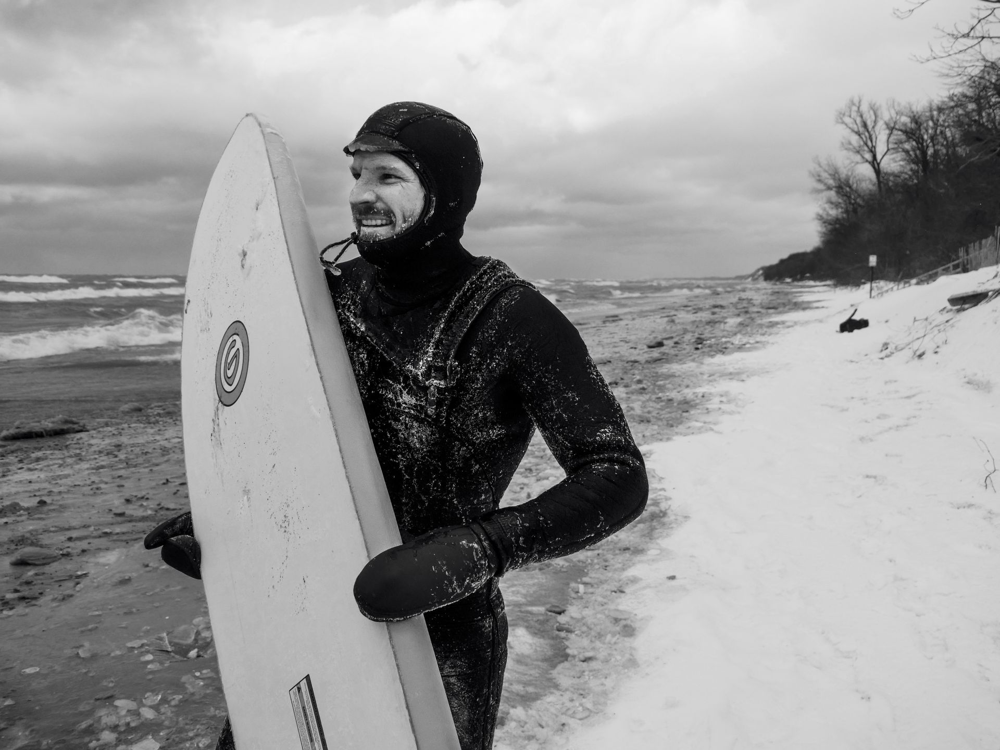
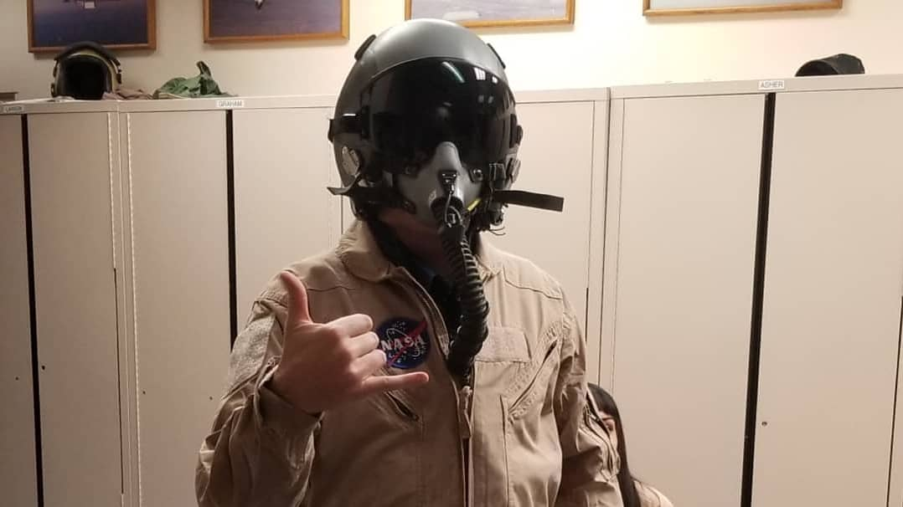

John
Strenio
Data scientist building agentic AI systems.
I was a professional freeskier for a long time, and now I work in data science and machine learning. This site has a little about me and the work I’ve done.

Background
I grew up in Vermont and spent most of my ski career in Salt Lake City while attending the University of Utah. I competed in contests like the FIS Slopestyle World Championships and X Games Real Ski, and once stunt-doubled for Vin Diesel in a Hollywood film.
In my late 20s I went back to school for a Master’s in Computer Science, focused on AI and machine learning, and interned for NASA at the Armstrong Flight Research Center along the way.
When I’m not deep in data science and machine learning, I’m usually surfing or playing with my dog.
Professional work
Norstella
Data scientist, 2026 to present
A pharmaceutical analytics company whose brands support clients across the drug development lifecycle, from clinical trials to market forecasting and patient access. I design and build agentic AI systems that help users explore complex pharmaceutical data and generate structured analytical insights, including MCP servers and toolsets over large structured and unstructured data sources, and agents that pair domain knowledge with the retrieval and transformation tools needed to answer real analytical questions.
Scribd
Data scientist, 2022 to 2026
An ebook and audiobook subscription platform with hundreds of millions of documents in many languages. I built ML solutions using both traditional NLP and LLMs to improve search, discovery, and content quality, across the full lifecycle: prototyping generative AI applications, pre-training custom models, and building distributed inference pipelines and agentic RAG over a 100M+ document corpus. Projects covered document summarization, search query correction, SEO optimization, and recommendations, including features that generated millions of dollars in year-over-year revenue.
Ask about my experience
Type a question about my background or work and get an answer.
Contact
johnstrenio@gmail.com
